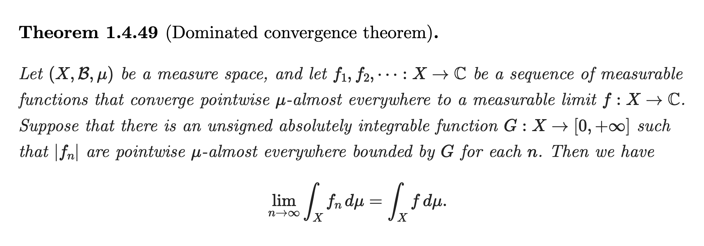
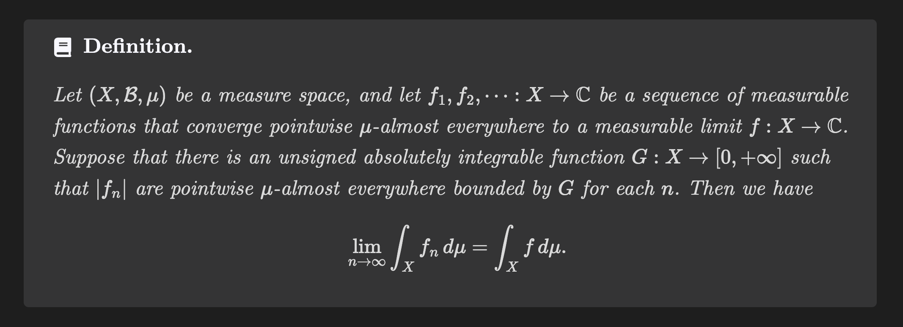
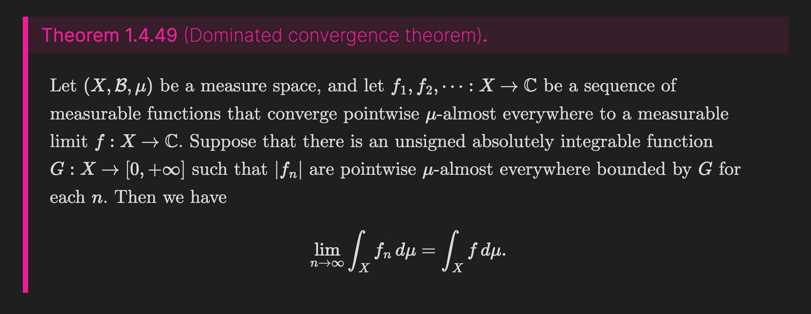
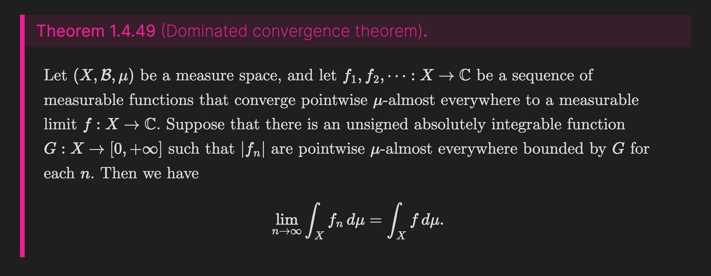

Style your theorems
You can customize the appearance of math callouts using CSS snippets.
Math Booster defines several custom CSS classes, allowing you to change the styles depending on specific languages or environments (theorem/definition/…).
CSS classes
Obsidian built-in classes
.callout.callout > .callout-title.callout > .callout-title > .callout-icon.callout > .callout-title > .callout-title-inner
.callout > .callout-content
Math Booster’s custom classes
.math-callout: Assigned to all math callouts. You can use it as an alternative to.callout[data-callout="math"]..math-callout-{type}: Indicates the environment type. For example, a math callout whose type is “theorem” will be given the.math-callout-theoremclass..math-callout-{language code}: Indicates the language used for the math callout. Currently onlyenandjaare available..math-callout-subtitle: Corresponds to the title field in the math callout settings. Lives inside.callout-title-inner. Ex) Theorem 1.1 (here is.math-callout-subtitle)
Styles gallery
Example theorem cited from: Tao, Terence, ed. An introduction to measure theory. Vol. 126. American Mathematical Soc., 2011.
Plain
Note that Title suffix is set to “.” in the settings.

View CSS snippet
View CSS snippet
</details>
Framed

View CSS snippet
MathWiki style
This beautiful style is taken from MathWiki. A big thank you to Zhaoshen Zhai, the owner of MathWiki and the MathLinks plugin, for readily consenting to including it in this documentation.

View CSS snippet
Vivid
 

View CSS snippet
</details>